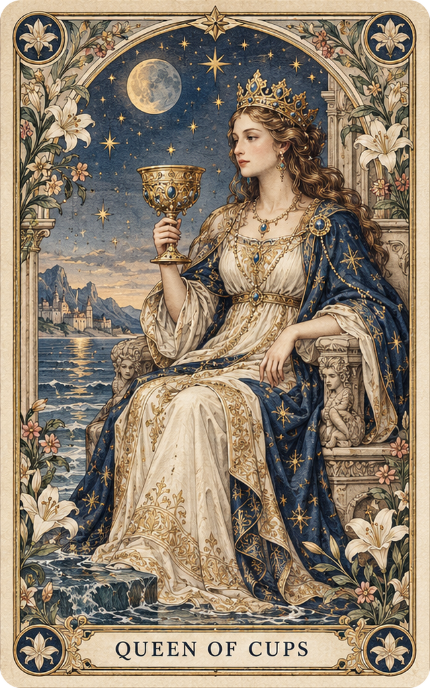
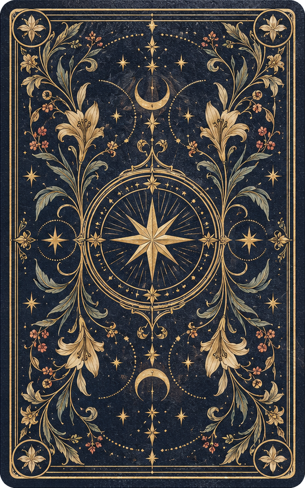
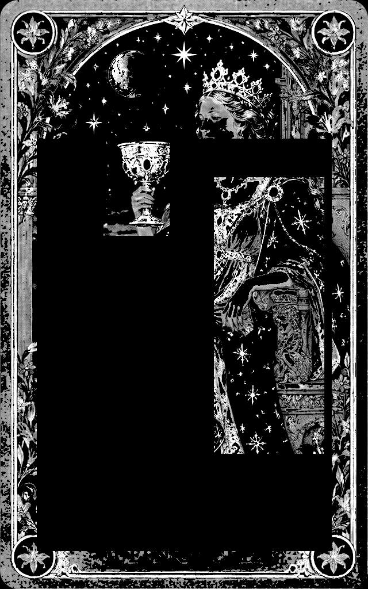

塔罗牌实现质感展示
将塔罗牌插画、纸张纹理与金箔细节转化为浏览器中的交互原型。通过 AI 辅助编程与材质调校，让塔罗牌可以倾斜、翻转，并随指针移动呈现局部反光。
移动指针查看反光，横向拖动或点击按钮翻牌。
在线浏览完整演示三个关键实现
从插画到可以拿起来端详的卡片，关键在于纸张厚度、局部反光，以及自然衔接的翻面动作。


牌面插画共用牌背
让插画成为有厚度的纸牌
以圆角卡体承接正反两张图片，保留纸牌边缘与厚度。以纸张纹理表现细微凹凸，调低光泽并配合柔和灯光和接触阴影，建立棉纸的触感。
不同牌面共用同一套尺寸与牌背，切换牌面时保持展示方式一致。

让反光只出现在金箔上
用灰度遮罩标记牌面的金色花纹，将金箔纹理叠加在这些区域。纸面保持柔和，装饰细节则随视角呈现明暗变化。
着色器读取指针位置、移动速度和卡片倾角，控制高光的方向、范围与亮度，让反光随着操作掠过牌面。
拖动、翻面与切牌连成一次体验
横向拖动时，位移映射为卡片的旋转角度；松手后根据角度吸附至正面或背面。翻面与轻微倾斜分别控制，再用阻尼平滑过渡。
按钮与方向键同样可以翻牌，Escape 返回正面并重置视角。底部缩略图切换塔罗牌，手机上也可以直接触摸操作。